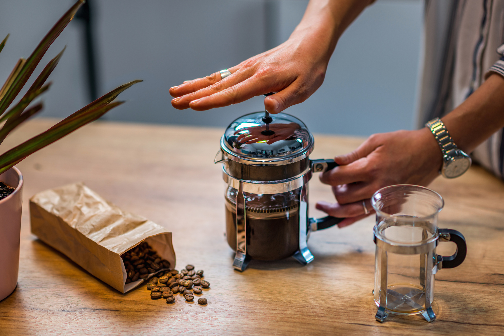
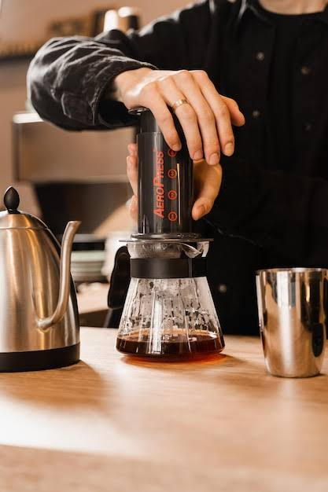
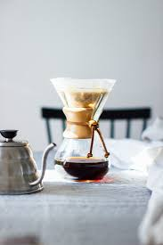

Hario V60

Método filtrado que utiliza um suporte
cônico e filtro de papel.
Características
- Corpo leve
- Sabores definidos
- Acidez perceptível
Preparo
Utilize 15 g de café para 250 ml de água.
Despeje a água gradualmente sobre o café
moído, em movimentos circulares.
Prensa Francesa

Método de infusão que utiliza um êmbolo
com filtro metálico para separar o café.
Características
- Corpo encorpado
- Presença de óleos naturais
- Textura intensa
Preparo
Utilize 20 g de café para 300 ml de água.
Aguarde aproximadamente 4 minutos
e pressione o êmbolo lentamente.
AeroPress

Método que combina imersão e pressão
manual para extrair o café.
Características
- Corpo variável
- Preparo rápido
- Versatilidade de receitas
Preparo
Utilize 15 g de café para 200 ml de água.
Misture, aguarde cerca de 1 minuto
e pressione lentamente.
Chemex

Cafeteira de vidro que utiliza filtros
de papel mais espessos.
Características
- Bebida limpa
- Corpo leve
- Sabores delicados
Preparo
Utilize 30 g de café para 500 ml de água.
Faça a pré-infusão e continue despejando
a água de forma gradual.